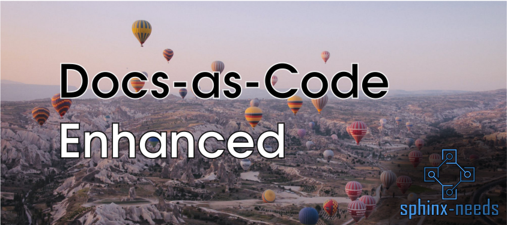
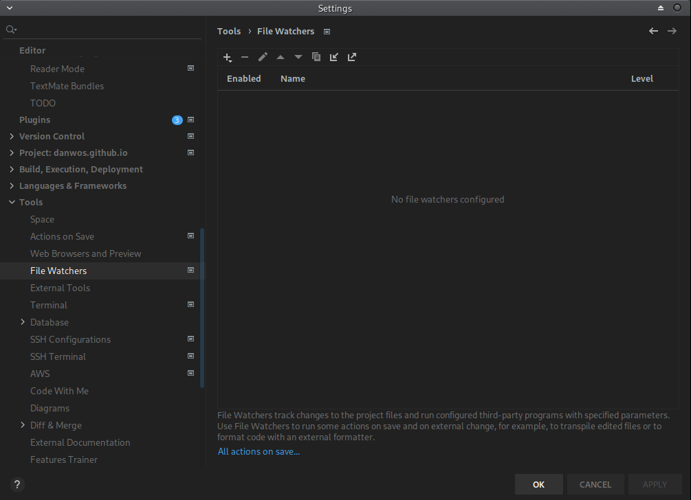
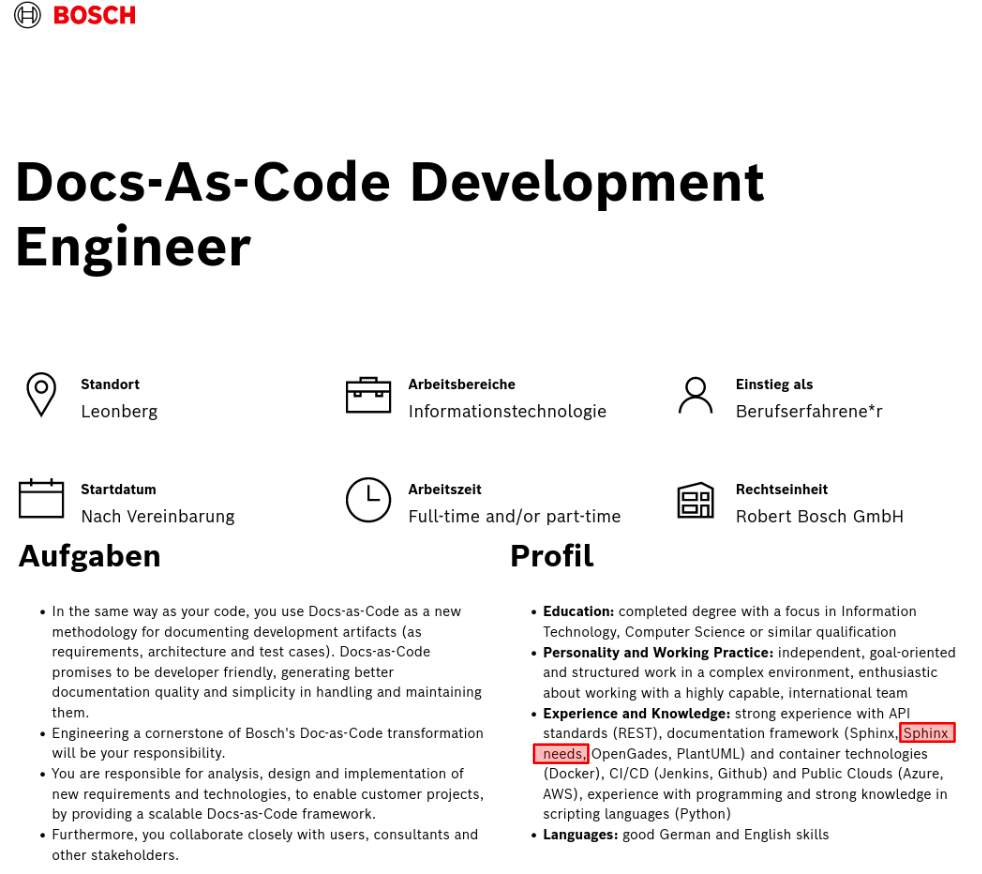

Posted in 2021
Process documents with Sphinx-Needs
- 02 December 2021
Documenting processes is often a separate task in companies. Done by an extra department/team for processes, workflows and tools (PMT). And published in specific formats, which are not reusable or referencable by project specific documentations. But being able to link project requirements to process steps would help developers to understand the need for such requirements.
This post explains how the docs-as-code approach can be used to document processes and workflows.
Open-Needs-DB gets funded
- 29 November 2021
The Prototype Fund supports and finances Open-Needs-DB from March to September 2022.
The Federal Ministry of Education and Research created this program to support developers in Germany during the creation of digital prototypes for topics in the area of Civic Tech, Data Literacy, IT Security and Software Infrastructure.
Sphinx Extension Development: Tips & Tricks
- 22 November 2021
In the last year I have written some Sphinx extensions and figured out some stuff, which I want to share here.
First of all, the documentation for Sphinx extension development is not so detailed. There is a tutorial available by the Sphinx team, but the used example project is quite simple.
Docs-as-Code Enhanced
- 19 November 2021
For most of us “Docs-as-Code” mostly means to store the documentation files beside the project sources in git. Also editing the sources in an already used IDE and using the CI system to build it, are 2 important use cases why docs-as-code is chosen to create documentation.
But these features have nothing to do with the documentation content itself. What if the content itself can be treated as code? What if the content / documentation language provides features, which we already know from our programming languages?

Page meta data in Sphinx
- 18 November 2021
In bigger Sphinx projects, written by hundreds of authors, you often need to store additional data to somehow have the overall page creation and update process under control.
This data can be stored and maintained as meta-data on top of each rst file.
String2Link transformation with Sphinx-Needs
- 16 November 2021
Sphinx-Needs got a new cool feature to easily create links of a given string for options. The string-links feature.
This allows to just set e.g. a github issue id and get a link to exactly this issue in the final docs.
PyCharm File Watchers for Sphinx projects
- 05 November 2021
I often have the case that I want to see my documentation as fast as possible.
And I know there are “Preview” IDE-Extensions available, which want to solve this problem.

Page reactivation
- 02 November 2021
For a long, long time I had no private representation on the internet, as most of my work was done for open-source projects, so that I added my thoughts to their websites and documentation pages.
Now, I’m planing something big ;)
Job advertisement for Sphinx-Needs
- 02 November 2021
I just have detected the first job advertisement, which asks for Sphinx-Needsas skill. Yeah 🥳
The job is for a Docs-As-Code Development engineer at Bosch in Leonberg, Germany.
